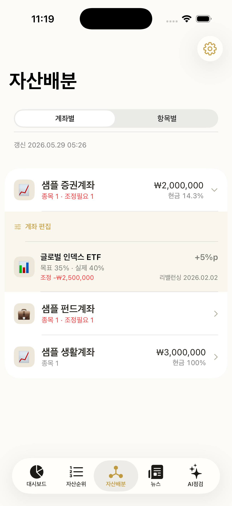
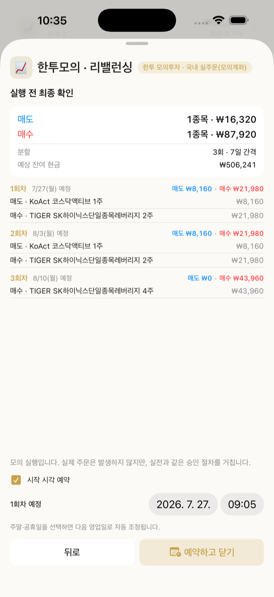

새 돈으로 모자란 쪽을 채운다
목표 비중을 정해 두어도 시간이 지나면 오른 종목은 커지고 내린 종목은 작아집니다. 이걸 되돌리는 방법은 둘입니다.
- 많아진 종목을 팔아서 적어진 종목을 산다.
- 새로 넣는 돈으로 적어진 종목만 산다.
매달 적립하는 계좌라면 두 번째가 쉽습니다. 팔 것이 없으니 거래가 한 방향이고, 계산도 단순합니다.
손으로 하면 이렇습니다
예시입니다. 목표가 주식 ETF 60% · 채권 ETF 40%인 계좌에 지금 주식 660만 원 · 채권 340만 원이 있고, 이번 달 50만 원을 넣습니다.
- 넣은 뒤 총액은 1,050만 원입니다.
- 목표 금액은 주식 630만 원 · 채권 420만 원입니다.
- 주식은 이미 660만 원이라 살 것이 없고, 채권이 80만 원 모자랍니다.
- 넣을 돈은 50만 원이니 전부 채권에 넣습니다.
종목이 서너 개가 되고, 한 주 가격이 제각각이면 이 계산이 금방 번거로워집니다.
앱에서는
홈의 이번 달 넣을 돈 나누기를 누르고 계좌와 금액을 넣습니다. (목표 비중을 넣은 계좌가 있어야 홈에 카드가 보입니다.)
- 새 돈을 더한 총액을 기준으로 모자란 종목부터 몇 주씩 살지 나옵니다. 팔지 않습니다.
- 종목마다 지금 비중 → 산 뒤 비중과 목표가 같이 보입니다.
- 주수로 나누고 남는 돈은 현금으로 둡니다.
- 이미 목표에 딱 맞는 계좌라면 새 돈을 목표 비율대로 나눕니다.


사고 난 뒤
골고루는 주문을 넣지 않습니다. 나온 주수대로 증권사 앱에서 직접 삽니다. 산 뒤 「샀어요 — 보유에 반영」을 누르면 그 주수가 보유에 더해지고(평단은 가중평균으로), 남은 돈은 그 계좌의 현금이 됩니다.
잊지 않게
매달 적립일에 알림을 켜고 날짜를 고르면 그날 아침 9시에 알려 줍니다. 월급날 다음 날로 맞춰 두면, 알림을 누르고 금액을 넣고 증권사 앱에서 사는 데까지 10분이면 됩니다.
차이가 너무 클 때는
새 돈으로 메우기에는 차이가 너무 벌어졌다면 일부를 팔아 옮기는 리밸런싱이 필요합니다. 그건 조정안의 리밸런싱 계획에서 다룹니다.
이 글의 비중과 금액은 계산을 보이기 위한 예시이며 투자 권유가 아닙니다.
함께 보기
안드로이드 테스터 모집 중 — 뭐타지 · 복지비 청구 · 메트로놈는 아이폰에 나와 있고, 안드로이드는 구글 플레이 정식 공개 전입니다. 먼저 써 보실 분은 테스트 참여로 오세요.